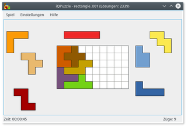
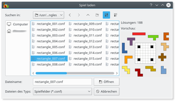
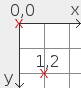
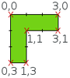

iQPuzzle
Dieser Artikel wurde für die folgenden Ubuntu-Versionen getestet:
Ubuntu 16.04 Xenial Xerus
Ubuntu 14.04 Trusty Tahr
Zum Verständnis dieses Artikels sind folgende Seiten hilfreich:
 Wer gerne knobelt, kann seine Intelligenz an iQPuzzle
Wer gerne knobelt, kann seine Intelligenz an iQPuzzle  erproben. Das Zielprinzip erinnert entfernt an Tangram, aber als Spielsteine dienen Pentominos. Und es müssen keine Figuren nachgelegt werden, sondern alle Einzelteile lückenlos in ein vorgegebenes Spielfeld eingepasst werden. Zur Auswahl stehen 300 verschiedene Spielfelder.
erproben. Das Zielprinzip erinnert entfernt an Tangram, aber als Spielsteine dienen Pentominos. Und es müssen keine Figuren nachgelegt werden, sondern alle Einzelteile lückenlos in ein vorgegebenes Spielfeld eingepasst werden. Zur Auswahl stehen 300 verschiedene Spielfelder.
Wünsche und Anregungen zum Programm können über die Projektseite geäußert werden. Realisiert wurde es mit Hilfe der Grafikbibliothek Qt. Neben Ubuntu werden zusätzliche Versionen für Windows, allgemein für Linux als AppImage (Downloadseite  ) und für weitere Linux-Distributionen (Arch, CentOS, Debian, Fedora, openSUSE) über den openSUSE Build Service angeboten.
) und für weitere Linux-Distributionen (Arch, CentOS, Debian, Fedora, openSUSE) über den openSUSE Build Service angeboten.
Installation¶
 Das Programm ist nicht in den offiziellen Paketquellen enthalten. Das Programm kann aber aus dem "Personal Package Archiv" (PPA) [1] des Entwicklers installiert werden.
Das Programm ist nicht in den offiziellen Paketquellen enthalten. Das Programm kann aber aus dem "Personal Package Archiv" (PPA) [1] des Entwicklers installiert werden.
PPA¶
|  |
| Rechteckiges Spielfeld |
Adresszeile zum Hinzufügen des PPAs:
ppa:elthoro/iqpuzzle
Hinweis!
Zusätzliche Fremdquellen können das System gefährden.
Ein PPA unterstützt nicht zwangsläufig alle Ubuntu-Versionen. Weitere Informationen sind der  PPA-Beschreibung des Eigentümers/Teams elthoro zu entnehmen.
PPA-Beschreibung des Eigentümers/Teams elthoro zu entnehmen.
Damit Pakete aus dem PPA genutzt werden können, müssen die Paketquellen neu eingelesen werden.
Nach dem Aktualisieren der Paketquellen kann das folgende Paket installiert [2] werden:
iqpuzzle (ppa)
 mit apturl
mit apturl
Paketliste zum Kopieren:
sudo apt-get install iqpuzzle
sudo aptitude install iqpuzzle
Bedienung¶
|  |
| Spielfeldauswahl |
Bei Ubuntu-Varianten mit einem Anwendungsmenü erfolgt der Programmstart [3] über den Menü-Eintrag "Spiele -> Logikspiele -> iQPuzzle". Unter Unity und GNOME 3 gibt man stattdessen den Programmnamen ein.
Über "Spiel -> Neues Spiel" oder mit der Tastenkombination Strg + N kann ein Spielfeld-Layout ausgesucht werden. Eine Vorschau bei der Auswahl eines Layouts sowie die Anzeige der möglichen Lösungen (sofern bekannt) ermöglichen eine Abschätzung des Schwierigkeitsgrads. Zusätzlich kann über "Spiel -> Zufälliges Spiel" ein zufälliges Spiel aus allen verfügbaren Feldern gestartet werden. Des Weiteren kann die zufällige Auswahl auf bisher ungelöste Spielfelder eingeschränkt, sowie eine Schwierigkeitsstufe gewählt werden. Auf Wunsch kann über "Einstellungen" bzw. mit den Tastenkombinationen Strg + + und Strg + - noch das Spielfeld optisch vergrößert oder verkleinert (skaliert) und so an den eigenen Geschmack angepasst werden.
Die weitere Benutzung ist einfach: Standardmäßig wird mit der linken Maustaste  ein Puzzleteil gelegt bzw. verschoben, das Mausrad
ein Puzzleteil gelegt bzw. verschoben, das Mausrad  dient zum Drehen des Spielsteins. Mit der rechten Maustaste
dient zum Drehen des Spielsteins. Mit der rechten Maustaste  kann dieser gespiegelt werden. Das Spiel ist gewonnen, wenn alle Puzzleteile so in das Spielfeld eingepasst worden sind, dass kein Zwischenraum mehr frei bleibt. Die Maustasten zur Bedienung können über "Einstellungen -> iQPuzzle einrichten..." angepasst werden.
kann dieser gespiegelt werden. Das Spiel ist gewonnen, wenn alle Puzzleteile so in das Spielfeld eingepasst worden sind, dass kein Zwischenraum mehr frei bleibt. Die Maustasten zur Bedienung können über "Einstellungen -> iQPuzzle einrichten..." angepasst werden.
Eigene Puzzles erstellen¶
Eigene Puzzles können über eine Textdatei erstellt und über "Spiel -> Neues Spiel" geladen werden. Die Datei sollte mit der Dateiendung .conf abgespeichert werden. Nachfolgend als Beispiel Puzzle pento_T.conf:
1 2 3 4 5 6 7 8 9 10 11 12 13 14 15 16 17 18 19 20 21 22 23 24 25 26 27 28 29 30 31 32 33 34 35 36 37 38 39 40 41 42 43 44 45 46 47 48 49 50 51 52 53 54 55 56 57 58 59 60 61 62 63 64 65 66 67 68 69 70 71 72 73 74 75 76 77 78 79 80 81 82 83 84 85 86 87 88 89 90 91 92 93 94 95 96 97 98 99 100 101 102 103 104 105 106 107 108 109 110 111 112 113 114 115 116 117 118 119 120 121 122 123 124 125 126 | [General] GridSize=25 BGColor="#EEEEEE" PossibleSolutions=106 NotAllPiecesNeeded=true [Board] Polygon="0,0 | 9,0 | 9,9 | 0,9 | 0,0" Color="#FFFFFF" BorderColor="#2E3436" GridColor="#888A85" ## X X X X ## X [Block1] Polygon="0,0 | 4,0 | 4,1 | 1,1 | 1,2 | 0,2 | 0,0" Color="#3465A4" BorderColor="#000000" StartPos="-3,-5" ## X X X ## X ## X [Block2] Polygon="0,0 | 3,0 | 3,1 | 2,1 | 2,3 | 1,3 | 1,1 | 0,1 | 0,0" Color="#75507B" BorderColor="#000000" StartPos="-5,-2" ## X X X ## X ## X [Block3] Polygon="0,0 | 3,0 | 3,1 | 1,1 | 1,3 | 0,3 | 0,0" Color="#FC9A06" BorderColor="#000000" StartPos="8,11" ## X X ## X X ## X [Block4] Polygon="0,0 | 2,0 | 2,1 | 3,1 | 3,2 | 2,2 | 2,3 | 1,3 | 1,1 | 0,1 | 0,0" Color="#E9B96E" BorderColor="#000000" StartPos="-4,2" ## X ## X X X ## X [Block5] Polygon="1,0 | 2,0 | 2,1 | 3,1 | 3,2 | 2,2 | 2,3 | 1,3 | 1,2 | 0,2 | 0,1 | 1,1 | 1,0" Color="#8F5902" BorderColor="#000000" StartPos="4,-4" ## X X ## X ## X X [Block6] Polygon="0,0 | 2,0 | 2,1 | 1,1 | 1,2 | 2,2 | 2,3 | 0,3 | 0,0" Color="#CE5C00" BorderColor="#000000" StartPos="-5,6" ## X X X X ## X [Block7] Polygon="0,0 | 4,0 | 4,1 | 3,1 | 3,2 | 2,2 | 2,1 | 0,1 | 0,0" Color="#73D216" BorderColor="#000000" StartPos="9,-4" ## X X X ## X X [Block8] Polygon="0,0 | 3,0 | 3,1 | 4,1 | 4,2 | 2,2 | 2,1 | 0,1 | 0,0" Color="#C4A000" BorderColor="#000000" StartPos="-5,12" ## X X ## X X ## X [Block9] Polygon="0,0 | 2,0 | 2,1 | 3,1 | 3,3 | 2,3 | 2,2 | 1,2 | 1,1 | 0,1 | 0,0" Color="#FCE94F" BorderColor="#000000" StartPos="10,1" ## X X ## X ## X X [Block10] Polygon="0,0 | 2,0 | 2,2 | 3,2 | 3,3 | 1,3 | 1,1 | 0,1 | 0,0" Color="#A40000" BorderColor="#000000" StartPos="11,5" ## X ## X X ## X X [Block11] Polygon="0,0 | 1,0 | 1,1 | 2,1 | 2,3 | 0,3 | 0,0" Color="#729FCF" BorderColor="#000000" StartPos="3,10" ## X X X X X [Block12] Polygon="0,0 | 5,0 | 5,1 | 0,1 | 0,0" Color="#EF2929" BorderColor="#000000" StartPos="-3,10" [Barrier1] Polygon="0,0 | 3,0 | 3,6 | 0,6 | 0,0" Color="#000000" BorderColor="#000000" StartPos="0,3" [Barrier2] Polygon="0,0 | 3,0 | 3,6 | 0,6 | 0,0" Color="#000000" BorderColor="#000000" StartPos="6,3" |
Erklärung zu den einzelnen Sektionen der Datei:
| Sektionen | |
| General | |
GridSize | Dezimaler Skalierungsfaktor (Standard: 25). Über diesen Parameter wird die Größe eines Spielfeldrasters in Pixeln festgelegt. |
BGColor | Hintergrundfarbe rund um das Spielfeld als Hexadezimalwert (Standard: "#EEEEEE") |
PossibleSolutions | Optional, sofern bekannt: Anzahl der möglichen Lösungen |
NotAllPiecesNeeded | Optional true oder false, abhängig davon, ob alle Teile für die Lösung verwendet werden müssen oder nicht (Standard: false) |
| Board | |
Polygon | Spielfelddefinition als Polygon (siehe Abschnitt Polygon). Das Spielfeld muss immer rechteckig sein. |
Color | Hintergrundfarbe des Spielfelds als Hexadezimalwert |
BorderColor | Rahmenfarbe des Spielfelds als Hexadezimalwert |
GridColor | Farbe des Gitternetzes des Spielfelds als Hexadezimalwert |
| BlockN / BarrierN - Puzzleteile / Hindernisse durchnummeriert von 1 bis N | |
Polygon | Form des Puzzleteils/eines Hindernisses als orthogonales Polygon (siehe Abschnitt Polygon). Zum Beispiel: "0,0 | 3,0 | 3,1 | 1,1 | 1,3 | 0,3 | 0,0" |
Color | Farbe des Puzzleteils/Hindernisses als Hexadezimalwert |
BorderColor | Rahmenfarbe des Puzzleteils/Hindernisses als Hexadezimalwert |
StartPos | Position "x, y" des Puzzleteils/des Hindernisses bei Spielstart (siehe Abschnitt Koordinatensystem). Referenzpunkt ist die linke obere Ecke des Teils. |
## Kommentar | Bei Bedarf kann die Datei mittels voran gestellter ## kommentiert werden. |
|  |  |
| Koordinatensystem | Beispielpolygon |
Koordinatensystem¶
Die linke obere Ecke des Spielfelds markiert den Nullpunkt des zugrunde gelegten Koordinatensystems. Punkte im System werden als Koordinatenpaar "x, y" definiert (x-Achse waagerecht nach rechts, y-Achse senkrecht nach unten). Als Startposition sind auch negative Werte erlaubt.
Polygon¶
Spielfeld, Puzzleteile und Hindernisse werden als (orthogonale) Polygone definiert. Die Form des Polygons wird über eine Liste aller Eckpunkte beschrieben. Zur Nummerierung der Eckpunkte siehe auch den vorangegangenen Abschnitt Koordinatensystem. Es ist darauf zu achten, dass das Polygon "geschlossen" ist, d.h. der erste und der letzte Eckpunkt des Polygonzugs müssen identisch sein. Die Eckpunkte (Koordinatenpaare) werden durch einen senkrechten Strich | ( Alt Gr + < ) getrennt und die komplette Liste durch Anführungszeichen abgeschlossen. Ein Beispielpolygon "0,0 | 3,0 | 3,1 | 1,1 | 1,3 | 0,3 | 0,0" ist auf der rechten Seite abgebildet.
Infobox¶
| iQPuzzle | |
| Genre: | Denkspiel (Gedächtnisleistung und Kombinationsvermögen) |
| Sprache: |    |
| Veröffentlichung: | 2014 |
| Entwickler: | Shakesbier (GitHub ) |
| Systemvoraussetzungen: | - |
| Medien: | Download |
| Strichcode / EAN / GTIN: | - |
| Läuft mit: | nativ |
 Programmübersicht
Programmübersicht- Erstellt mit Inyoka
-
 2004 – 2017 ubuntuusers.de • Einige Rechte vorbehalten
2004 – 2017 ubuntuusers.de • Einige Rechte vorbehalten
Lizenz • Kontakt • Datenschutz • Impressum • Serverstatus -
Serverhousing gespendet von